12.6 模型量化基础概念
前言 量化是模型压缩和加速常用的方法，因其效果相较于蒸馏、剪枝都要好，因此被大量的应用。 TensorRT也提供了模型量化的功能，本节开始来学习如何利用TensorRT进行模型量化，实现模型存储的减小，时延的降低，吞吐量的提升。 由于量化是非常大的概念，知识点和技巧非常多，因此量化将分为三个小节，第一个小节介绍量化基础概念，第二小节介绍TensorRT的PTQ（Post-Trainning Quantization，训练后量化）的方法，第三节介绍QAT(Quantization-aware training，量化感知训练) 。
量化概念
模型量化（model quantization）是通过降低权重和激活值的数据精度，以此减少模型计算时间和能耗的方法。
通常情况下，模型权重和激活值以FP32/FP16进行训练和存储，当精度降低到Int8时，存储数据的内存开销减少了4倍（相对于FP32），矩阵乘法的计算成本减少了16倍。
大量研究及工程实践表明，模型量化有一定的鲁棒性，在降低存储、提高推理效率的同时，模型精度损失相对较小，如Nvidia文章《integer quantization for deep learning inference principles and empirical evaluation》中给出的精度损失统计表格，通常掉点在1个点上下，但可带来几十倍的效率提升。
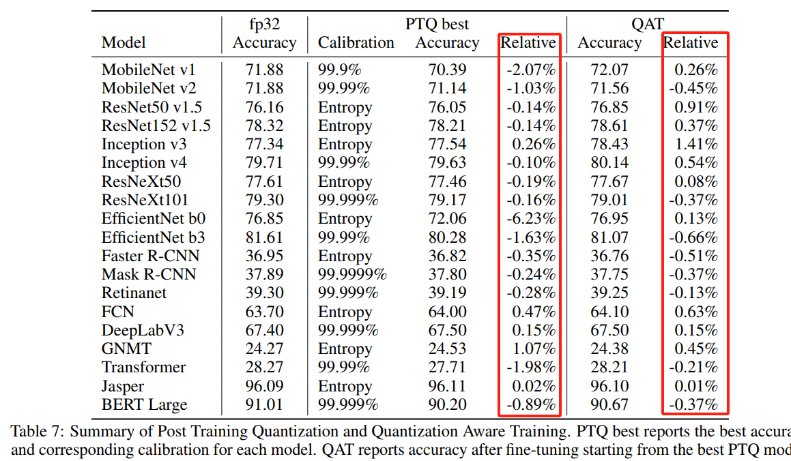
量化优点
量化最直观的优点是带来速度提升和存储的降低，但其好处远不止这些，它还可以为环境保护，抵御全球变暖提供帮助，因为低比特模型可以带来更少的热量挥发。
根据文章《A Survey of Quantization Methods for Efficient》的分析，FP32的乘/加操作消耗的能量是Int8的30倍/18.5倍，由此可见低比特可以显著降低能量消耗与热量挥发。

由此可知，量化可以带来：
- 存储降低：通过将权重和激活值从高位精度（如32位）降低到低位精度（如8位），模型所需的存储空间大大减少。
- 访问减少：低位精度的量化模型需要较少的内存带宽和存储带宽来读取和传输权重和激活值
- 速度提升：由于低精度模型执行矩阵乘法等计算操作时的计算量减少，模型的推理速度可以显著提高
- 电费减少：量化模型的计算操作需要更少的能量，功耗降低，从而减少了电费开支
- 热量减少：由于量化模型对处理器的负载较低，因此产生的热量也相对较少，这对于移动设备和嵌入式系统等散热受限的环境中的长时间性能非常重要。
量化的数学公式
在数字信号处理领域，量化是指将信号的连续取值近似为有限多个离散值的过程，在模型量化中也是类似的，用较少的数（例如：Int8）表示较多的数(例如：FP32)。
用较少的数表示较多的数，实际上是一个线性映射，求一个缩放值scale和一个偏移量offset，将FP32中的数缩放到int8表示的256个数中的某一个数。
可以参考下图，最上面是FP32可表达的数据范围，经过缩放和偏移以及四舍五入，将数据划分到[-128, 127]之间，这类似于直方图统计。
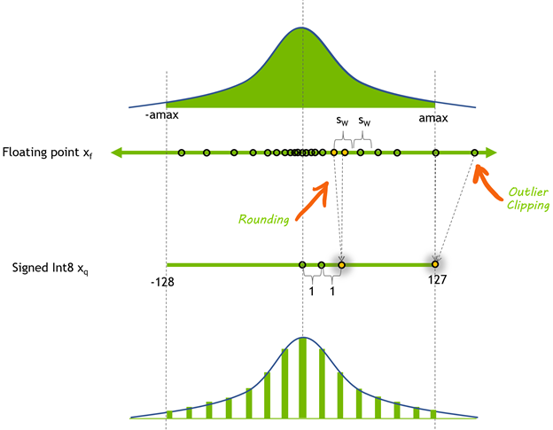
将浮点型数据转换为整型数据有多种形式，根据整型数据的0点是否为中间位置，可将量化分为对称量化（Symmetric Quantization）和非对称量化（Asymmetric Quantization）。参考MIT TinyML 第六节的两页PPT来学习对称量化和非对称量化。（PS：此处讲的均是线性量化）
浮点型数据与整型数据转换公式如下：
r = S(q - Z)
q = r / S + Z
- r：浮点型
- q：整型
- S：缩放因子scale
- Z：零点数值Zero
对称量化
对称量化是零点在0处，为此需要取绝对值的最大值作为上限、下限，这样就可得到零点在0处。
然后根据公式计算缩放值scale，S = 2.12 / 1 = 2.12，更一般的可以写为 S = 2.12 - (-2.12) / 1 - (-1) = (22.12) / (21) = 2.12 / 1 = 2.12
由于Z=0，不需要计算Z值
有了S和Z就可以对浮点型数据和整型数据进行互相转换.如下图所示，图片来源: https://efficentml.ai
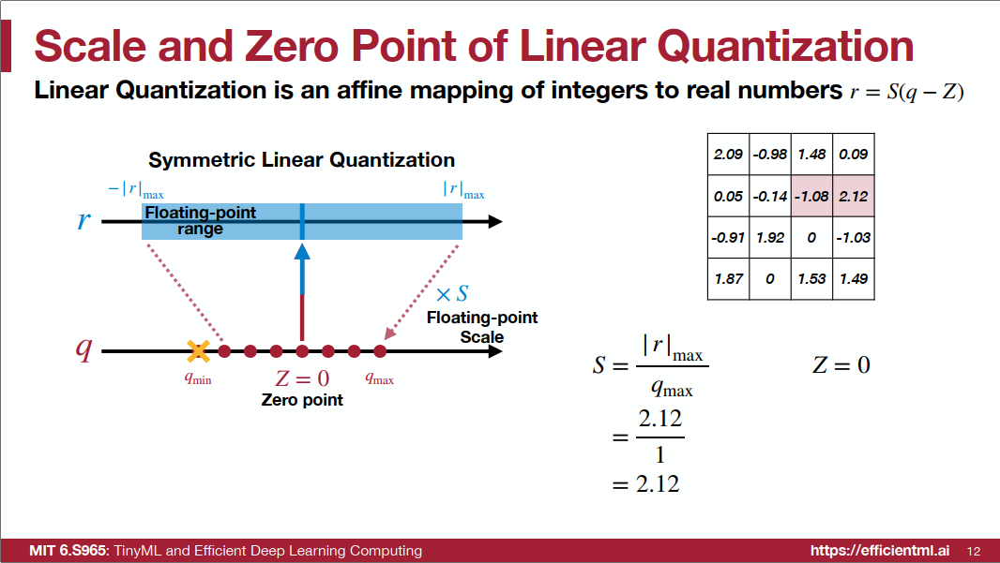
非对称量化
非对称量化的上下限就根据真实分布选择，这样通常Z就不是0。
- 根据公式计算Scale，S = 2.12 - (-1.08) / 1 - (-2) = 1.07；
- 根据公式计算Zero, Z = round(-2 - -1.08/1.07) = -1；
尝试量化 r=0，观察q对应什么值：
q = r / S + Z = 0/1.07 + -1 = -1
可以发现，非对称量化时，浮点数的0值在量化后变为了Z值。
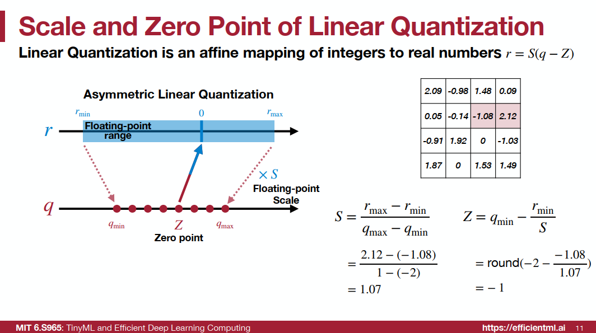
动态范围计算方法
在计算scale时，如何选择数据的上限、下限将会影响最终量化效果。
例如上文的对称量化是有数据损失的，是不饱和量化。因为直接取绝对值的最大值作为上限，取负作为下限，通常会存在一个数据区间是没有浮点数据的，但会占据量化后的一部分数据表示，这些数据表示则会被浪费掉，导致量化后是不饱和的。
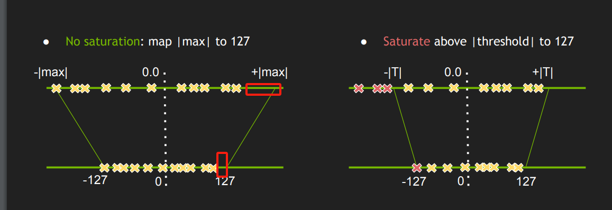
Min-Max
除了上文中的Min-Max方法、通常还采用Histgram和Entropy进行动态范围的选择。
这里推荐B站博主手写AI的视频教程这里对其视频做笔记分享。
Histogram
为了选择合适的上限、下限，可以通过直方图进行数据统计，然后根据数据分布情况，选择恰当的上下限，以此解决离群点带来的不饱和问题。
通常Histogram需要设置一个超参数，用来确定上下限收缩的范围，称为limit。
通常limit=0.9999, 0.99999之类。表示从上限、下限进行收缩，收缩之后的数据频次占总数据量的99%。
可采用双指针实现上述过程：
- 首先定左指针、右指针分别指向左边界和右边界
- 计算当前双指针之间的直方图覆盖率，如果小于等于设定的覆盖率阈值，则返回此刻的左指针指向的直方图值，如果不满足，则需要调整双指针的值，向中间靠拢
- 如果当前左指针所指向的直方图值大于右指针所指向的直方图值，则右指针左移，否则左指针右移
- 循环，直到双指针覆盖的区域满足要求
得到上限、下限后，再根据量化公式计算S和Z。
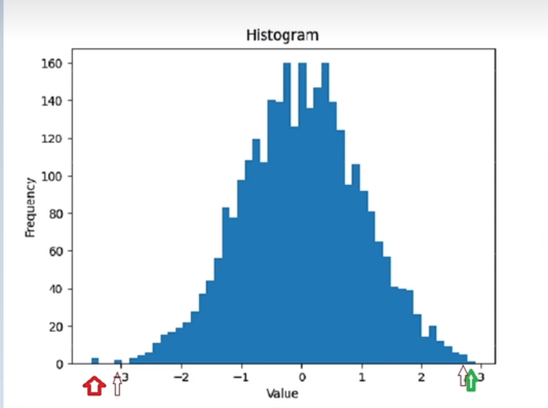
Entropy（K-L散度）
Entropy方法是一种基于概率分布的动态范围计算方法，通过对原始数据进行直方图统计，得到真实数据分布p，然后通过KL散度（相对熵，用于描述两个概率分布之间的相似性）来衡量分布q与p之间的相似性，最终找到一个与p很相似的q分布，q的分布上限、下限就可以作为动态范围。
下图是计算q分布的伪代码，具体过程包含较多细节，推荐大家观察博主的视频即可，在此了解采用的Entropy是通过概率分布的方式寻找动态范围，此方法在TensorRT中也有实现和运用。
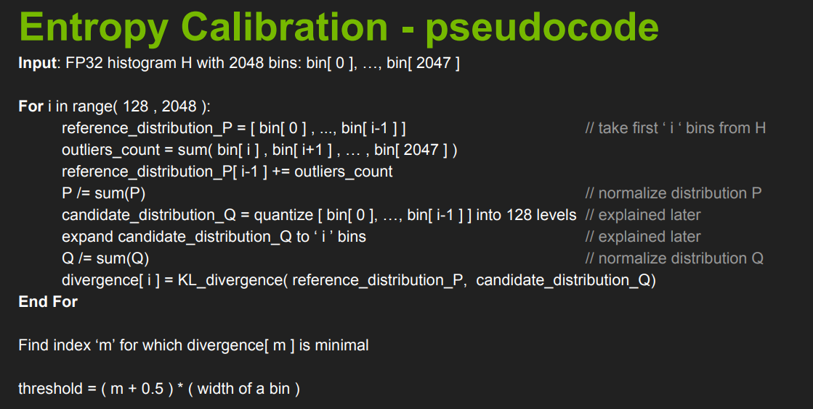
weight、bias和activation的量化
上文对量化数值的变化及选择进行了介绍，但对于模型具体运算过程是如何对FP32数据进行量化为int8，最终由反量化回FP32进行输出，还需要进一步分析。
在模型中，需要量化的内容主要有三个，分别是weight、bias和activation。
weight和bias好理解，当模型训练好之后，就可以选定动态范围，然后计算scale和Z值，就可得到量化方法及量化后的weight和bias。
而activation也需要量化，这个一开始不好理解，这个要从运算溢出讲起。
例如两个int8计算时，如100 + 100 = 200，这是采用int8（可表示[-128, 127]）就无法表示200，因此对于运算后的值（激活值）通常需要更高精度来表示，如int32。
但对于激活值输出又需要采用int8来表示，这时候就需要将int32量化为int8的过程，这就是激活值（activation）量化。
可通过下图观察一个网络层在量化后是如何计算的，同时可知道一个网络层需要在哪几个地方进行量化（计算scale和Z值）。
图中对于weights、bias和网络层输出都需要经过quantize，即量化。量化的scale和Z值则是在部署前进行确定，这些值的确定也是模型量化核心的内容。
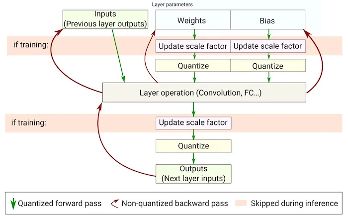
了解了需要量化的对象后，下面来学习校准（Calibration）的概念。
对于weight和bias，当模型训练结束后，数值分布就已确定，因此无需额外操作获取数据分布，即可进行scale和Z值的计算。
对于activation就不行，它依赖于具体数据的输入。因此，对于activation的量化，往往需要采用真实数据的输入（前向传播），然后统计激活值的数据分布，用于量化。
对于activation，采用真实数据获取数据分布再量化计算scale和Z值，这个过程叫做校准（Calibration）。
PTQ与QAT
量化也好，校准也好，都是将高精度数据进行统计，然后计算scale和Z值，在部署的推理过程中进行低比特量化。
根据计算scale和Z值的阶段不同，模型量化可分为PTQ和QAT两大类，两者各有优缺点。
PTQ（Post-training quantization，训练后量化），是不需要训练数据（输入数据和标签对数据），通常采用小部分数据（不需要标签）进行模型激活值校准，统计激活值的分布，然后选择量化scale和Z值，对于weight和bias直接根据模型数据进行量化。
QAT(Quantization-aware training，量化感知训练) ，是需要训练数据，并需要在训练阶段插入伪量化层，训练得到带QDQ节点的数据，然后在量化时采用QDQ节点进行量化，可以得到比PTQ更高的精度。
- QDQ（quantize节点、dequantize节点）节点是QAT的灵魂，是一个量化节点和反量化节点，可在训练时进行迭代优化，思想是在训练的时候获得一个好的Q节点，它的scale和Z值是比较好的scale和Z值，为什么说它得到的值比较好呢？因为这些值可通过DQ节点恢复出更接近真实值的数据，因此认为训练阶段获得的Q节点中的scale和Z值是较好的选择。
根据TensorRT官方介绍pdf，QDQ(也称FQ， fake quantize，伪量化节点)的插入如下图所示，最终部署时可直接采用Q节点中的scale和Z值。
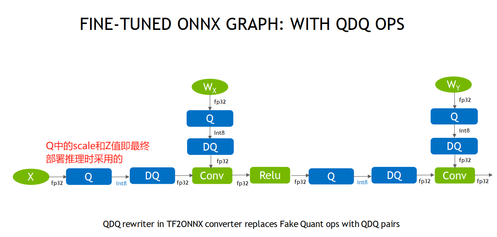
PTQ和QAT的对比，可参考B站博主ZOMI酱的视频
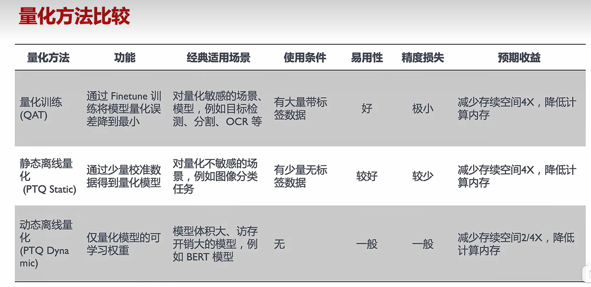
通过综述《A Survey of Quantization Methods for Efficient》图4，也可以很好的理解PTQ和QAT之间的差别。
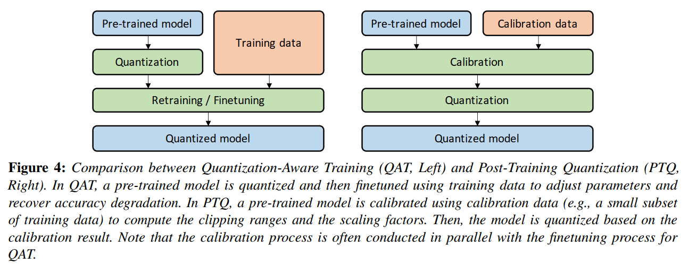
那么PTQ和QAT如何选择？ 通常根据精度损失的多少来选，优先选择方便的PTQ进行验证，通常PTQ掉2个点以内，如果PTQ掉点过大，可采用QAT。
下图是Nvidia对模型量化前后精度损失的统计，绝大多数模型采用PTQ掉点0-2个点，甚至还有精度提高的模型。
特别需要注意的是efficientnet及其他轻量化设计的模型结构对于PTQ是不适用的，需要采用QAT进行量化。
小结
本节详细介绍了量化的基础知识和概念，对于初入门量化概念的朋友来说，信息量会有一些大，这里做一下要点总结。
- 量化概念：高精度用低精度数据表示，可减少存储，提高推理速度
- 线性量化：分为对称和非对称量化，公式是r = S(q - Z)， q = r / S + Z ， r是高精度数据，q是量化后数据
- S和Z的求取：可通过Min-Max、Histogram、Entropy三种方法确定数据上限和下限，然后根据通用公式求取
- 量化对象：通常量化对象有weight、bias、activation，前两者不需要数据推理，后者需要真实数据推理才可进行统计，并计算S和Z值
- 量化方法：根据是否需要训练，量化分为PTQ和QAT
- PTQ：不需要训练数据，需要小批量真实数据（校准数据）进行推理，对activation进行量化。
- QAT：需要训练数据，在训练阶段插入QDQ节点，在部署推理时，Q节点可实现高精度量化。
下一小节将介绍在TensorRT中实现PTQ。